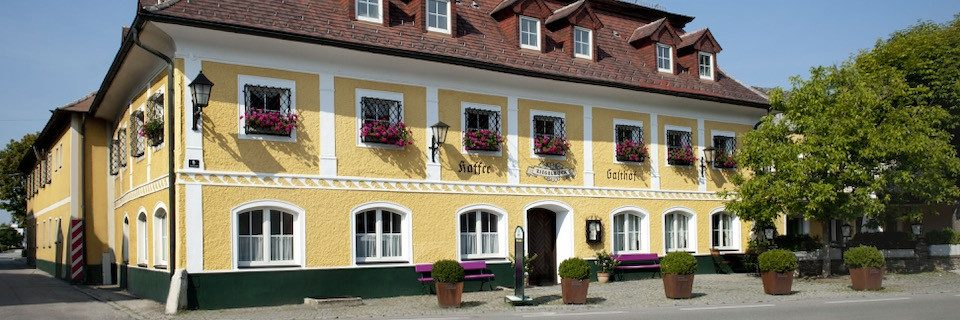
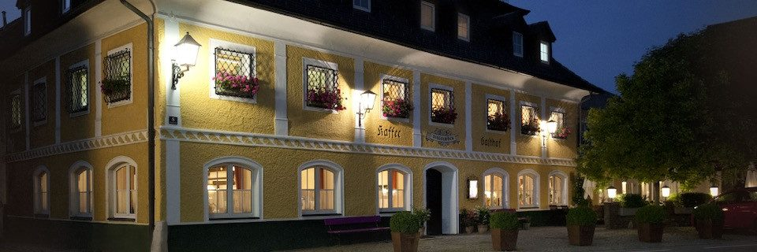
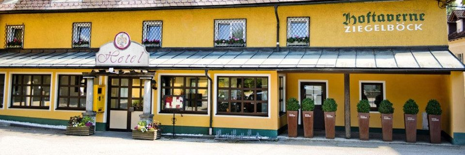
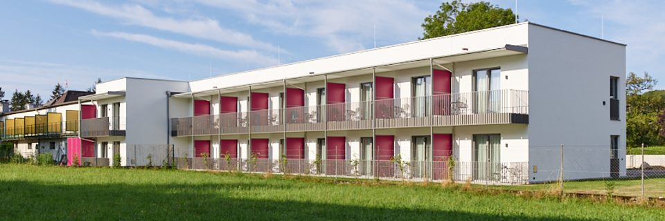
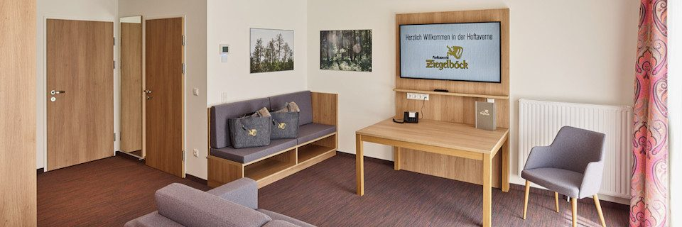

Gasthaus
Bodenständig gekocht,
täglich frisch
Mittagessen in der Hoftaverne – abwechslungsreich und jeden Tag frisch zubereitet. Jederzeit gibt es hausgemachte Mehlspeisen, köstliche Eisbecher oder eine Jause mit regionalen Produkten.
Öffnungszeiten
Wann wir für Sie da sind
| Tag | Haus | Frühstück | Warme Küche |
|---|---|---|---|
| Montag bis Freitag | 8:00–24:00 | 6:30–10:00 | 11:30–21:00 |
| Samstag | Gasthaus geschlossen. Für Gruppen ab 50 Personen öffnen wir gerne auf Anfrage. | ||
| Sonn- und Feiertag | 8:00–16:00 | 8:00–10:00 | 11:30–15:00 |
Gerne sind wir nach vorheriger Vereinbarung auch außerhalb der Öffnungszeiten für Sie da.
Mittagsbuffet
Das Mittagsbuffet gibt es immer werktags zwischen 11:30 und 13:30 Uhr – abwechslungsreich und jeden Tag frisch zubereitet. Für Hausgäste ist es Teil der Vollpension um € 39,– pro Person und Tag.
Jause & Mehlspeisen
Außerhalb der Küchenzeiten gibt es jederzeit hausgemachte Mehlspeisen, köstliche Eisbecher oder eine Jause mit regionalen Produkten.
Frühstück für alle
Das Frühstücksbuffet steht auch Gästen aus der Region offen: All-Inclusive um € 19,–, Kinder von 6 bis 14 Jahren € 7,90, Kinder bis 5 Jahre kostenfrei.
Weinkeller
Ein Ziegelgewölbe, das 2000 wieder ans Licht kam
Im Jahr 2000 wurde der alte Weinkeller renoviert. Hinter dem Verputz kam ein altes Ziegelgewölbe zum Vorschein, das mühevoll freigelegt wurde. Heute beherbergt der Keller das gut sortierte Weinangebot der Hoftaverne.
Der Gewölbebogen dieses Kellers ist auch die Form, die sich durch diese Website zieht.
Zum Mitnehmen
Echte Spezialitäten bieten den einmaligen Geschmack der regionalen Küche – vor allem, wenn sie hausgemacht sind. Ob als Andenken oder Mitbringsel: Die hausgemachten Marmeladen von Ingrid Ziegelböck sind ein unvergleichlicher Genuss. Nur die besten Früchte aus dem eigenen Obstgarten werden dafür verkocht.
Daneben bieten wir hausgemachte Schnäpse an, etwa den „Nussan“ (Nussgeist) oder den Weichsellikör. In 0,5-Liter-Flaschen abgefüllt sind sie ein geistreicher Gruß aus dem Salzkammergut.
Erhältlich im Haus. Gerne auch als Gutschein-Beigabe – siehe Gutscheine.
Impressionen
Das Haus in Vorchdorf




Wellness
Sauna und Fitnessraum
Die gemütliche Sauna bietet Platz für bis zu sechs Personen und verfügt über einen Außenbereich und einen kleinen Ruhebereich.
Der Fitnessraum bietet auf über 20 Quadratmetern:
- Laufband
- Ergometer
- Rudergerät
- Yogamatten
- Sprossenwand
- Hantelbank mit Kurzhanteln in diversen Gewichten
Für Gäste der Kategorien Junior Suite und Komfort S ist der Zutritt zu Sauna und Fitnessraum inkludiert; im Package „Golfer“ ebenfalls.
